For the very high dimensional problems common in text classification, sometimes the data are linearly separable. But in the general case they are not, and even if they are, we might prefer a solution that better separates the bulk of the data while ignoring a few weird noise documents.
If the training set
 is not linearly separable, the standard approach is to allow the fat decision margin to make a few mistakes (some points - outliers or noisy examples - are inside or on the wrong side of the margin). We then pay a cost for each misclassified example, which depends on how far it is from meeting the margin requirement given in Equation 169. To implement this, we introduce slack variables 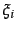. A non-zero value for allows 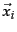 to not meet the margin requirement at a cost proportional to the value of . See Figure 15.5 .
is not linearly separable, the standard approach is to allow the fat decision margin to make a few mistakes (some points - outliers or noisy examples - are inside or on the wrong side of the margin). We then pay a cost for each misclassified example, which depends on how far it is from meeting the margin requirement given in Equation 169. To implement this, we introduce slack variables 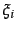. A non-zero value for allows 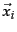 to not meet the margin requirement at a cost proportional to the value of . See Figure 15.5 .
The formulation of the SVM optimization problem with slack variables is:
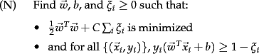
The optimization problem is then trading off how fat it can make the margin versus how many points have to be moved around to allow this margin. The margin can be less than 1 for a point by setting 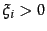, but then one pays a penalty of 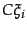 in the minimization for having done that. The sum of the gives an upper bound on the number of training errors. Soft-margin SVMs minimize training error traded off against margin. The parameter  is a regularization term, which provides a way to control overfitting: as
is a regularization term, which provides a way to control overfitting: as  becomes large, it is unattractive to not respect the data at the cost of reducing the geometric margin; when it is small, it is easy to account for some data points with the use of slack variables and to have a fat margin placed so it models the bulk of the data.
becomes large, it is unattractive to not respect the data at the cost of reducing the geometric margin; when it is small, it is easy to account for some data points with the use of slack variables and to have a fat margin placed so it models the bulk of the data.
The dual problem for soft margin classification becomes:
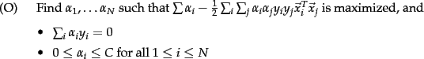
Neither the slack variables nor Lagrange multipliers for them appear in the dual problem. All we are left with is the constant  bounding the possible size of the Lagrange multipliers for the support vector data points. As before, the with non-zero 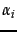 will be the support vectors. The solution of the dual problem is of the form:
bounding the possible size of the Lagrange multipliers for the support vector data points. As before, the with non-zero 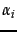 will be the support vectors. The solution of the dual problem is of the form:
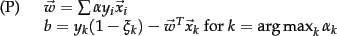
Again  is not needed explicitly for classification, which can be done in terms of dot products with data points, as in Equation 170.
is not needed explicitly for classification, which can be done in terms of dot products with data points, as in Equation 170.
Typically, the support vectors will be a small proportion of the training data. However, if the problem is non-separable or with small margin, then every data point which is misclassified or within the margin will have a non-zero . If this set of points becomes large, then, for the nonlinear case which we turn to in Section 15.2.3 , this can be a major slowdown for using SVMs at test time.
| Classifier | Mode | Method | Time complexity |
| NB | training |
|
|
| NB | testing | 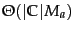 | |
| Rocchio | training |
|
|
| Rocchio | testing | ||
| kNN | training | preprocessing |
|
| kNN | testing | preprocessing |
|
| kNN | training | no preprocessing | 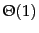 |
| kNN | testing | no preprocessing |
|
| SVM | training | conventional | 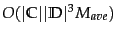; |
| 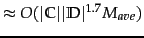, empirically | |||
| SVM | training | cutting planes |
|
| SVM | testing | 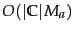 |
The complexity of training and testing with linear SVMs is shown in Table 15.1 . The time for training an SVM is dominated by the time for solving the underlying QP, and so the theoretical and empirical complexity varies depending on the method used to solve it. The standard result for solving QPs is that it takes time cubic in the size of the data set (Kozlov et al., 1979). All the recent work on SVM training has worked to reduce that complexity, often by being satisfied with approximate solutions. Standardly, empirical complexity is about
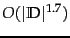 (Joachims, 2006a). Nevertheless, the super-linear training time of traditional SVM algorithms makes them difficult or impossible to use on very large training data sets. Alternative traditional SVM solution algorithms which are linear in the number of training examples scale badly with a large number of features, which is another standard attribute of text problems. However, a new training algorithm based on cutting plane techniques gives a promising answer to this issue by having running time linear in the number of training examples and the number of non-zero features in examples (Joachims, 2006a). Nevertheless, the actual speed of doing quadratic optimization remains much slower than simply counting terms as is done in a Naive Bayes model. Extending SVM algorithms to nonlinear SVMs, as in the next section, standardly increases training complexity by a factor of
The time for training an SVM is dominated by the time for solving the underlying QP, and so the theoretical and empirical complexity varies depending on the method used to solve it. The standard result for solving QPs is that it takes time cubic in the size of the data set (Kozlov et al., 1979). All the recent work on SVM training has worked to reduce that complexity, often by being satisfied with approximate solutions. Standardly, empirical complexity is about
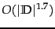 (Joachims, 2006a). Nevertheless, the super-linear training time of traditional SVM algorithms makes them difficult or impossible to use on very large training data sets. Alternative traditional SVM solution algorithms which are linear in the number of training examples scale badly with a large number of features, which is another standard attribute of text problems. However, a new training algorithm based on cutting plane techniques gives a promising answer to this issue by having running time linear in the number of training examples and the number of non-zero features in examples (Joachims, 2006a). Nevertheless, the actual speed of doing quadratic optimization remains much slower than simply counting terms as is done in a Naive Bayes model. Extending SVM algorithms to nonlinear SVMs, as in the next section, standardly increases training complexity by a factor of
 (since dot products between examples need to be calculated), making them impractical. In practice it can often be cheaper to materialize the higher-order features and to train a linear SVM.
(since dot products between examples need to be calculated), making them impractical. In practice it can often be cheaper to materialize the higher-order features and to train a linear SVM.